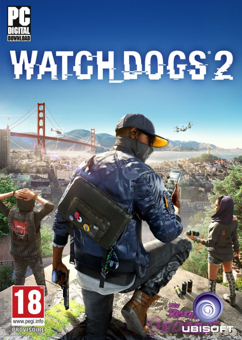

"Watch Dogs 2 est un jeu d'aventure en monde ouvert faisant suite aux événements du premier épisode. Ce nouvel opus de la franchise nous entraîne au cœur de la ville de San Francisco dans la peau du nouveau héros Marcus Holloway, un jeune hacker surdoué victime des algorithmes prédictifs du ctOS 2.0 qui l’accusent d’un crime qu’il n’a pas commis. Dans sa quête de vérité, Marcus pourra hacker les infrastructures de la ville ainsi que les personnes qui sont connectées au réseau." Ubisoft a encore frappé fort et n'a rien laissé au hasard, La ville de San Francisco a été reproduite a la perfection, on s'y perdrait presque ! Ils ont aussi misé sur un gameplay plus simple que le premier opus qui avait déçu beaucoup de joueurs. Le jeu est extrêmement complet, des possibilités quasi-infinies, les développeurs ont aussi inclus un mode multijoueur qui permettrait de participer a sorte de guerre de hackers dans tout San Francisco, des missions de vol de données d'autres joueurs y sont proposées lorsque ceux ci sont a proximité. Très peu de bugs ont été trouvés lors des tests, les developpeurs d'Ubisoft étaient attendus au tournant car on ne peut pas en dire autant de leurs précedents jeux. Pour finir on peut dire que Ubisoft n'a pas fini de nous surprendre et que ce nouveau jeu va en ravir plus d'un ! C'est tout pour nous, nous allons vous laisser sur une vidéo in game du jeu entre coupée de scènes IRL pour que vous puissiez voir a quel point il en met plein les yeux !